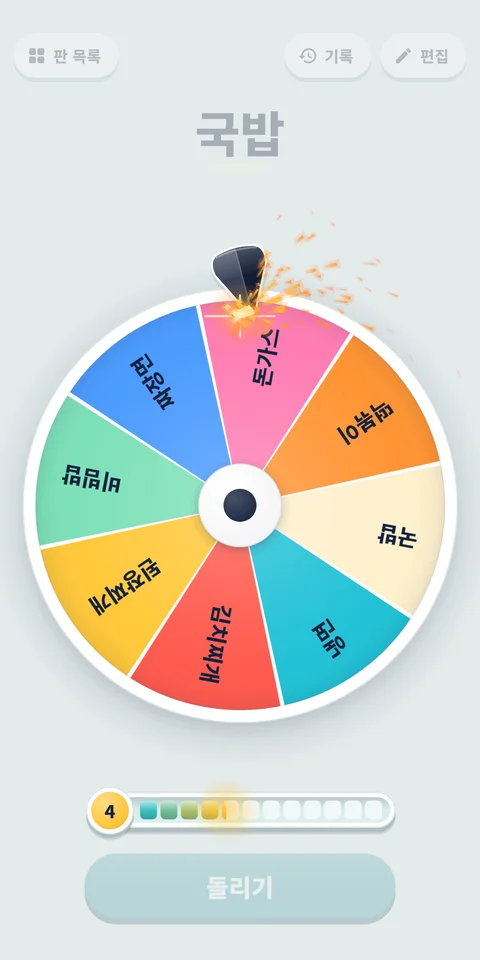
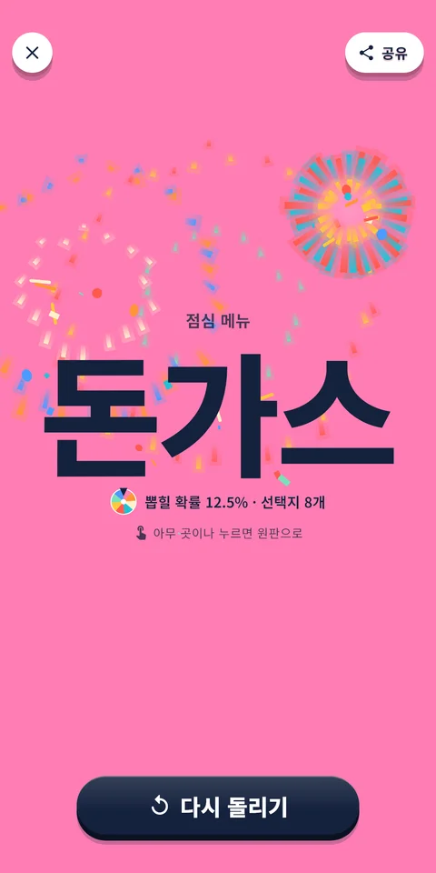
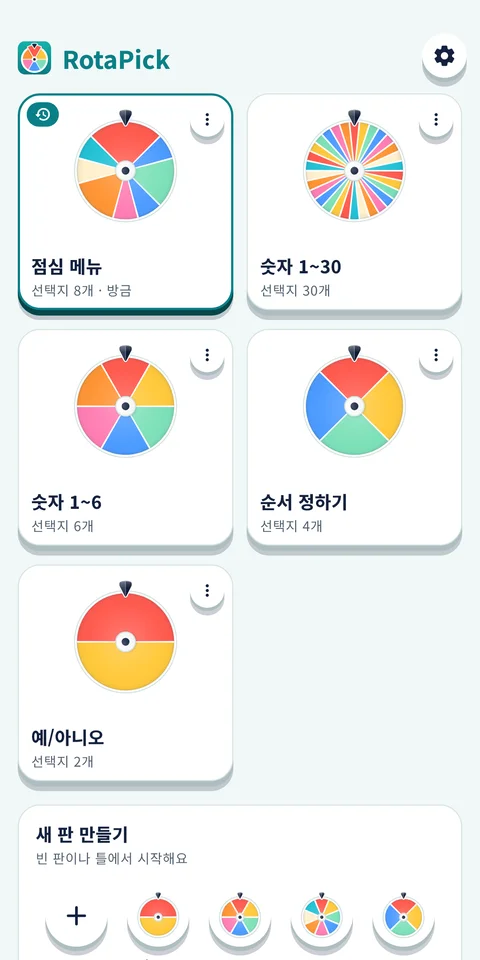
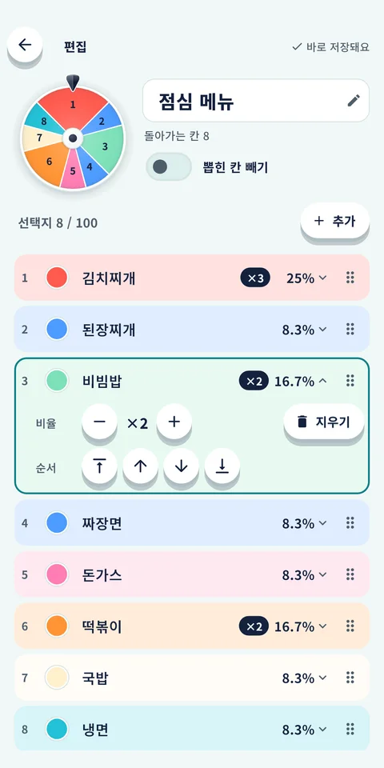
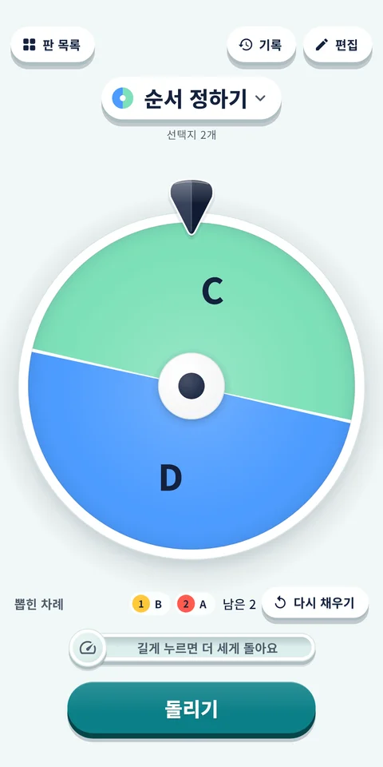
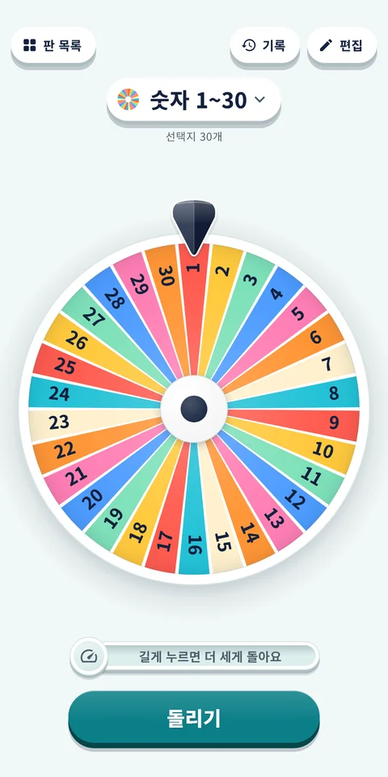
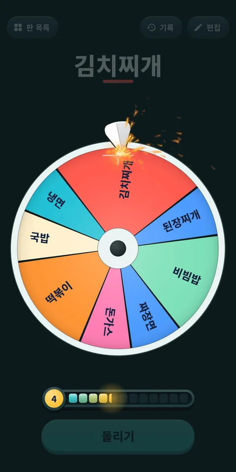

스크린샷







앱 정보
| 앱 이름 | RotaPick |
|---|---|
| 버전 | 1.0.0 |
| 개발 | Willee Project |
| 지원 플랫폼 | Android |
선택지를 적으면 색 칸으로 나뉜 원판이 생기고, 돌리면 바늘 아래에 멈춘 칸이 뽑히는 돌림판 앱입니다. 점심 메뉴, 순서 정하기, 예/아니오, 복불복처럼 하나를 골라야 할 때 씁니다.
- 회원가입도, 로그인도 없습니다. 만든 판과 기록은 기기 안에 저장됩니다.
- 인터넷 없이도 쓸 수 있습니다. 인터넷은 화면 아래 광고와 이용 통계·오류 보고를 보낼 때만 씁니다.
- 언어는 기기 설정을 따릅니다. 한국어·영어·일본어·중국어(간체·번체)를 지원하고, 설정에서 직접 고를 수도 있습니다.
- 결과는 미리 정해져 있지 않습니다. 칸 넓이가 곧 뽑힐 확률입니다(8장).
1. 시작하기
- 처음 켜면 점심 메뉴 판이 바로 열립니다. 판 이름 아래에 '판 이름을 누르면 다른 판 · 새 판'이라는 안내가 한 번 보입니다.
- 그다음부터는 마지막으로 연 판이 바로 열립니다.
- 판 이름 명판을 누르거나 위 막대의 판 목록을 누르면 판 목록으로 갑니다. 새 판은 거기서 만듭니다(4장).
2. 판 화면
가운데에 원판이 있고, 위쪽에 판 이름 명판과 단추 셋(판 목록·기록·편집), 아래쪽에 세기 막대와 돌리기 단추가 있습니다.
돌리기
- 톡 누르기: 돌리기를 짧게 누르면 보통 세기로 돕니다.
- 길게 누르기: 누르고 있으면 세기 막대가 차오릅니다(약 1.2초에 가득). 떼는 순간의 세기로 돕니다. 세기가 셀수록 처음 빠르기가 빠르고 오래 돕니다.
- 튕기기: 원판을 손가락으로 튕겨도 돕니다. 빨리 튕길수록 셉니다.
- 막대의 숫자는 세기(0~10)입니다. 누르는 동안에는 모은 세기를, 튕기는 동안에는 손 빠르기를, 도는 동안에는 원판 빠르기를 보여 줍니다.
- 세기를 맞춰도 칸을 노릴 수는 없습니다. 마지막 한 바퀴 안은 고르게 뽑힙니다.
- 도는 시간은 설정의 돌아가는 시간(짧게 약 3초·보통 약 5초·길게 약 8초)을 따르고, 세기에 따라 조금 늘거나 줄어듭니다(7장).
- 바늘이 칸 경계를 넘을 때마다 틱 소리와 진동이 납니다. 도는 동안 판 이름 자리에는 바늘 아래 칸의 이름이 보입니다.
뽑힌 칸 빼기가 켜져 있을 때
원판 아래(세기 막대 위)에 뽑힌 차례 띠가 생겨 뽑힌 칸과 남은 수를 보여 줍니다. 결과를 닫으면 뽑힌 칸이 원판에서 줄어 사라집니다. 다시 채우기를 누르면 모두 돌아옵니다. 다 뽑으면 '모두 뽑았어요.'와 다시 채우기가 나옵니다. 글이 있는 선택지가 하나뿐이면 '선택지를 두 개 이상 적어 주세요.'와 편집 단추가 나옵니다.
3. 결과
- 원판이 멈추면 뽑힌 칸이 원판 밖으로 튀어나오고, 칸 색이 화면을 채우며 결과 글이 크게 나타납니다. 그 칸이 뽑힐 확률도 함께 보입니다.
- 공유: 결과와 스토어 링크를 담은 글을 다른 앱으로 보냅니다.
- 다시 돌리기: 바로 다시 돌립니다. 이 단추도 길게 누르면 세기가 차오릅니다.
- 왼쪽 위 ×를 누르거나 아무 곳이나 누르면 원판으로 돌아갑니다(광고 바로 위의 좁은 띠는 눌러도 반응하지 않습니다).
- 결과는 뽑히는 즉시 기록에 남습니다.
4. 판 목록
- 판은 큰 원판 카드로 두 줄씩 보입니다. 카드에는 판 이름과, 선택지 수 · 마지막으로 쓴 때(방금·시각·어제·날짜)가 적혀 있습니다. 뽑힌 칸 빼기를 켠 판은 남은 수/전체 수가 보입니다.
- 최근에 쓴 판이 앞에 옵니다. 방금 쓴 판에는 청록 테와 왼쪽 위 시계 표시가 붙습니다.
- 카드를 누르면 그 판을 엽니다.
- 카드의 메뉴: 이름 바꾸기, 복제(원래 판 바로 다음 자리(두 줄 격자라 옆일 수도 있습니다)에 '{이름} 사본'이 생기고, 빠진 칸은 돌아오고 기록은 비어 있습니다), 지우기(한 번 묻습니다).
- 카드를 길게 눌러 끌면 순서를 바꿉니다.
- 새 판 만들기 카드에서 빈 판으로 시작하거나 아래 틀 넷 중 하나를 고릅니다. 만든 판은 판 목록 맨 앞에 옵니다. 빈 판은 바로 편집이 열리고, 틀을 고르면 그 판의 판 화면이 바로 열립니다.
| 틀 | 선택지 |
|---|---|
| 예/아니오 | 예, 아니오 |
| 숫자 1~6 | 1부터 6까지 |
| 점심 메뉴 | 김치찌개, 된장찌개, 비빔밥, 짜장면, 돈가스, 떡볶이, 국밥, 냉면 |
| 순서 정하기 | A, B, C, D (뽑힌 칸 빼기가 켜진 채 시작) |
설정(7장)은 판 목록 화면 위쪽의 설정 단추로 엽니다.
5. 편집
판 화면의 편집 단추로 엽니다. 고치는 대로 바로 저장되고, 저장 단추는 없습니다.
위쪽에는 미리보기 원판, 판 이름, '돌아가는 칸 n · 빠진 칸 m', 뽑힌 칸 빼기 스위치가 있습니다. 아래는 선택지 줄입니다.
- 선택지 n / 100: 한 판에는 선택지가 2~100개 있습니다. 추가로 줄을 더하고, 마지막 줄에서 키보드의 '다음'을 눌러도 새 줄이 생깁니다.
- 줄마다 칸 색 점, 글, ×n(비율), 뽑힐 확률(%)이 보입니다. 확률은 지금 원판에서 뽑힐 확률입니다.
- 줄을 누르면 펼쳐집니다. 비율을 ×1~×10으로 바꾸고(비율만큼 칸이 넓어집니다), 지우기를 누를 수 있습니다. 지우면 '선택지를 지웠어요'와 되돌리기가 잠시 나옵니다.
- 칸 색: 색 점을 누르면 8가지 색과 자동이 나옵니다. 자동은 이웃 칸과 다른 색으로 정해지고, 줄을 옮기거나 지워도 색이 칸을 따라갑니다.
- 순서 바꾸기: 줄의 손잡이를 잡고 끌거나, 펼친 줄의 순서 단추(맨 위로·위로·아래로·맨 아래로)를 누릅니다.
- 뽑힌 칸 빼기를 켜면 뽑힌 칸은 다시 채우기를 누를 때까지 원판에서 빠집니다. 빠진 칸은 흐리게 '뽑힘'이라고 표시됩니다.
6. 기록
판 화면의 기록 단추로 엽니다. 판마다 최근 50개를 남깁니다.
- 많이 나온 칸: 나온 횟수 막대와 지금 칸 넓이(%)를 나란히 봅니다. 횟수는 실제로 나온 결과이고, %는 그 칸이 나올 몫입니다.
- 아래에는 오늘·어제·날짜별로 묶인 결과가 새것부터 나옵니다.
- 기록 지우기를 누르면 한 번 묻고 그 판의 기록을 지웁니다.
7. 설정
판 목록의 설정 단추로 엽니다. 묶음은 둘입니다.
소리와 효과
| 항목 | 하는 일 |
|---|---|
| 효과음 | 틱·멈춤·결과·폭죽 소리를 켜고 끕니다 |
| 진동 | 돌 때와 멈출 때의 진동을 켜고 끕니다 |
| 효과 줄이기 | 불꽃·폭죽·번짐 같은 효과를 줄입니다 |
| 돌아가는 시간 | 짧게(약 3초), 보통(약 5초), 길게(약 8초) 가운데 고릅니다 |
일반
| 항목 | 하는 일 |
|---|---|
| 언어 | 기기 언어(기본)를 따르거나 목록에서 고릅니다(English · 日本語 · 한국어 · 简体中文 · 繁體中文) |
| 개인정보 보호 옵션 | 광고 동의 창을 다시 엽니다. 동의가 필요한 지역(유럽 등)에서만 보입니다 |
| 앱 정보 | 버전, 이 설명서(사용법), 스토어에서 평가하기, 개인정보처리방침, 오픈소스 라이선스, 다른 앱(누르면 스토어가 열립니다)과 모든 앱 보기 |
화면 색은 기기의 어두운 모드를 따릅니다. 앱 안에 따로 스위치는 없습니다.
8. 공정함
- 칸 넓이가 곧 확률입니다. 숨은 비율이 없습니다. ×2인 칸은 ×1인 칸보다 두 배 넓고, 뽑힐 확률도 두 배입니다.
- 결과를 미리 정하지 않습니다. 돌릴 때마다 처음 빠르기와 느려지는 정도를 무작위로 뽑고, 멈춘 각도가 칸을 정합니다.
- 세기와 도는 시간은 연출일 뿐 칸을 고르는 데 쓸 수 없습니다.
9. 광고와 저장
- 화면 맨 아래에 배너 광고가 하나 있습니다. 이것이 유일한 광고이고, 판 화면의 돌리기 단추와 원판은 광고에서 넉넉히 떨어져 있습니다. 키보드가 뜨면 광고 띠는 가려집니다.
- 동의가 필요한 지역(유럽 등)에서는 처음 켤 때 광고 동의 창이 나타납니다. 나중에 설정의 개인정보 보호 옵션에서 바꿀 수 있습니다.
- 앱 안 결제는 없습니다.
- 판·선택지·색·비율·기록·설정은 기기에만 저장되고, 서버로 보내지 않습니다. 구글 백업(안드로이드 자동 백업)이 켜져 있으면 함께 백업됩니다. 앱을 지우면 기기의 데이터도 지워집니다.
- 자세한 내용은 개인정보처리방침을 보세요.